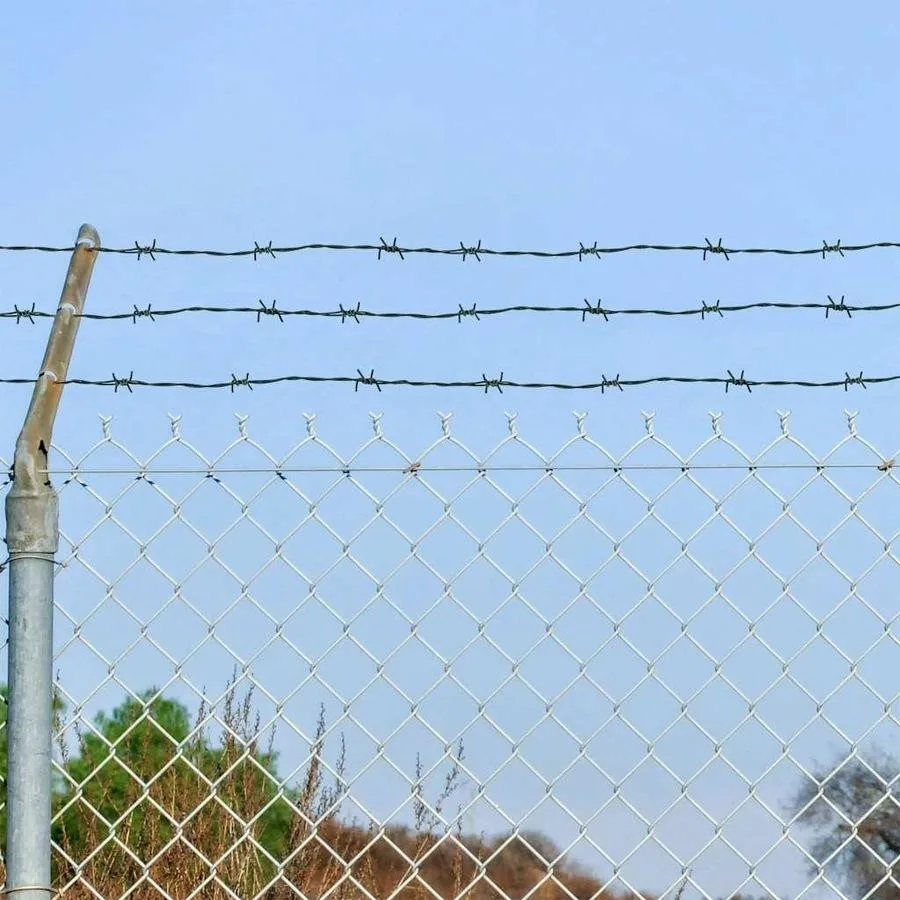

Quick answer
Barbed wire is twisted wire with short sharp barbs at intervals. It is economical and suits farm boundaries, livestock paddocks and fence-top strands. Razor wire carries flat steel blades with very sharp edges and is usually supplied as coils. It is a much stronger deterrent and suits walls, high-security fences, depots, mines and restricted areas. Choose barbed wire for long rural boundaries, and razor wire where the main goal is to stop people climbing in.
The short answer
| Barbed wire | Razor wire | |
|---|---|---|
| What it is | Twisted wire strands with short barbs spaced along them | Steel wire with flat, sharp-edged blades, usually formed into coils |
| Main job | Marking and protecting long boundaries, containing livestock | Stopping people climbing over walls and fences |
| Deterrence | Moderate | High |
| Typical use | Farms, paddocks, rural plots, fence-top strands | Wall tops, fence tops, depots, mines, stores, restricted zones |
| Installation | Tensioned strands between posts | Coils fixed on brackets, posts or along the ground |
| Budget | Economical for long distances | Higher cost per metre |
When barbed wire is the right choice
Barbed wire is the workhorse of farm fencing in Zimbabwe. Tensioned between posts in several strands, it marks the boundary, keeps cattle in and discourages people from crossing. It is fast to put up over long distances and easy to inspect and repair.
- Farm and ranch boundaries running for hundreds of metres or kilometres.
- Livestock paddocks, often combined with field fence below.
- Fence-top strands above diamond mesh to make it harder to climb.
- Rural plots where the aim is a clear, affordable boundary.
The number of strands and their spacing depend on what you are keeping in or out. Cattle fences commonly use several tensioned strands; goats and sheep need tighter spacing near the ground or a mesh fence.

When razor wire is the right choice
Razor wire is designed to stop people, not animals. Its blades cut into clothing and skin, so very few intruders try to cross it. It is the standard upgrade for walls and fences around anything worth stealing.
- Wall-top protection: mounted on brackets above a brick or precast wall.
- Fence-top protection: added above clearview, diamond mesh or palisade.
- Standalone barriers: coils along posts or the ground for high-risk zones and temporary cordons.
- Commercial, industrial and mining sites: stores, depots, plant areas and restricted zones. See mining and site security fencing.
Razor wire is commonly supplied as concertina coils of different diameters. Larger coils create a deeper barrier. The right coil size, spacing and fixing method depend on the wall or fence it goes on, so they are confirmed after looking at the site.
Can you use both?
Yes, and many sites do. A farm might use barbed wire strands on the outer boundary and razor wire around the homestead, stores or fuel tank. A business might use clearview or diamond mesh with a barbed wire top on the side boundaries and razor wire on the street-facing wall.
Safety and the law
- Handle it with the right gear. Razor wire in particular should be installed by people with cut-resistant gloves, sleeves and eye protection.
- Think about neighbours and the public. Mount it high enough and inside your boundary so it does not hang over a pavement or a neighbour's property.
- Check local rules. Estates, councils and landlords may have rules about security toppings on boundary walls, so confirm before installing.
What affects the cost
- Length of wall or fence to protect.
- Type of installation: wall-top, fence-top or standalone.
- Coil size or strand count, and the brackets or posts needed.
- Existing structure: the height, condition and fixing points of the wall or fence.
- Site access and working height.
- Supply only or full installation.
Send Azzar the approximate length, what the wire will be fixed to, your location and a few photos, and we will recommend the right option and quote. See our barbed wire and razor wire pages for more.
Get a quote from Azzar
Send us your location, the approximate length, what you want to protect and a few photos. We reply with a recommendation and a no-obligation quote, and arrange a free site assessment if one is needed.